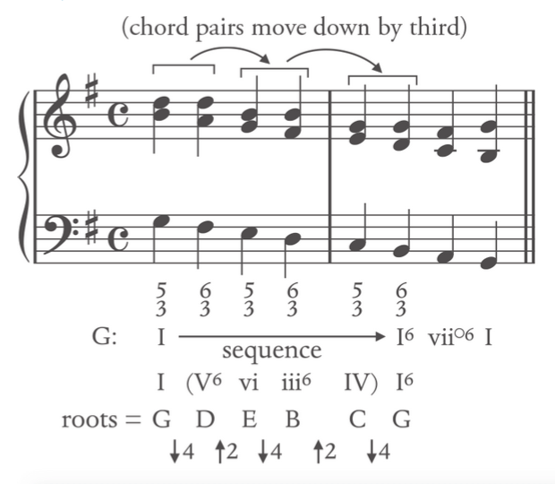
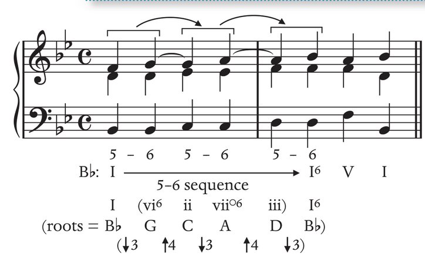

Sequence
Sequence Link to heading
A pattern of harmony that is transposted in a similar pattern. Sequences: suspend a harmonic function, hence sequence is a type of prolongation. In minor, the leading tone are not raised within sequence.
Sequence has the three following types: Link to heading
- Melodic Sequence: The melody is repeated and transposed, but not harmony.
- Model: Original gets transposed
- Sequence: transposed of repetition
- Full Sequence: both melodic and harmony are transposed
- Harmony Sequence: interval between chord roots is repteated (transposing the progression)
Harmony Sequence Link to heading
Sequence is a repeated pattern in a succession
An inversion (base note) changes does not changed the fact that it is a sequence. The root defines the sequence.
It can be as short as a single beat to long as several measures (melodic sequence) to several harmonies (harmonic sequence)
Often labeled by the pattern formed by their roots
Features a harmonic sequence involves a two-chord pattern transposed up/down; The logic of chord succession derives the harmonic pattern, not from the function (Tonic, dominant or subdominant)
Full Sequence Link to heading
the following are mostly full sequence because no inversion is incorporated.
Descending Sequences Link to heading
Root alternate up 4, down 5 (Most common) Link to heading
Descending fifth sequence (circle of fifths progression) Every pair of chords moves down by step, it is possible to replace the root position with seventh chords, inverted chords or both in a pattern
Root alternate down 4, up 2 Link to heading
Every pair of chords moves down by a third

Descending parallel 63 chords Link to heading
Reasong why only parallel 63 is allowed: Parallel 53 results in parallel fifth; Parallel 64 involve dissonances issue (not resolved voice leading) Often appear in three-part than four-part textures Often decorated by 7-6 suspensions
Ascending Sequences Link to heading
Root alternate up 5, down 4 Link to heading
Ascending fifth sequence All the triads must be either major or minor Every pair of chords moves up by step
Root alternate down 3, up 4 Link to heading
every pair of chords moves up by step
down 3, up 4 Variation: root+first inversion triad Link to heading
Ascending 5-6 sequence Appears in a three-voice texture
Voice Leading Link to heading
Parallel and unresolved chordal are not allowed within the sequential progressions
The leading tone can be doubled; the momentum by the sequential pattern repetition overrides the tendency of the leading tone
In the middle of a minor key, 7̂ does not need to be raised.
